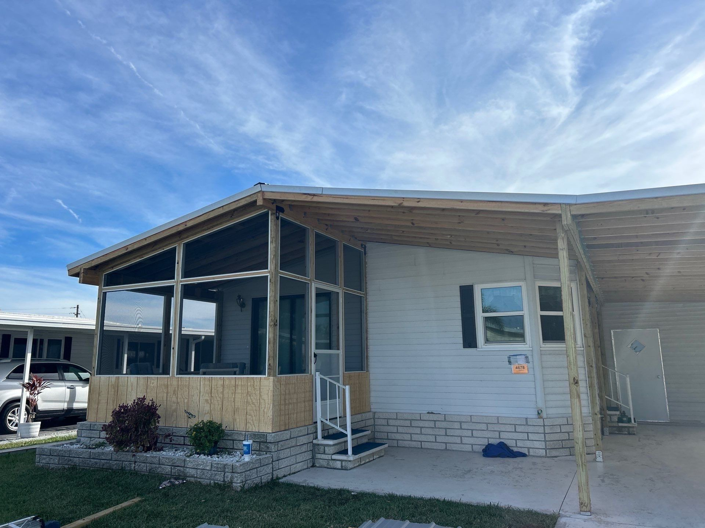

At Longitude Restored LLC, we believe every disaster tells a different story — and every recovery should, too. As a locally owned and operated restoration company serving Southwest Florida, we bring together fast response times, skilled craftsmanship, and a level of personal care that sets us apart. Our goal isn’t just to fix buildings; it’s to help families and businesses regain peace of mind after unexpected damage.
What began as a small restoration service has grown into a trusted community partner for storm recovery, water remediation, and property restoration of all sizes. Over the years, we’ve walked alongside homeowners after hurricanes, assisted businesses facing unexpected flooding, and provided the support needed when property damage threatened to upend lives. Through every project, one thing has remained consistent: our dedication to treating each property as if it were our own.
We understand the urgency that comes with storm and water damage. Minutes can make the difference between a quick cleanup and long-term issues like mold growth or structural deterioration. That’s why our team is trained, equipped, and ready to respond at all hours — giving our neighbors the confidence that help is never far away. From small drywall repairs to full-scale demolition and reconstruction, we approach every job with the same focus: restore properties, protect investments, and guide our clients through the process with honesty and care.
Based in Englewood, we’re proud to serve Venice, North Port, Port Charlotte, and the surrounding Southwest Florida communities. Our roots here mean more than just convenience — they mean we understand the challenges that come with coastal living, from seasonal storms to flood-prone neighborhoods. Wherever you are in Southwest Florida, you can count on Longitude Restored LLC to be there when you need us most — ready to help you move forward quickly, safely, and with confidence.
What Sets Us Apart
Built on Experience, Driven by Care
Reliability Always Ready, Day or Night
Emergencies don’t wait for business hours, and neither do we. Our team is available 24/7 to respond
quickly when disaster strikes, giving you peace of mind that help is only a phone call away.
Craftsmanship Built To Last A Long Time
We don’t believe in quick fixes. Every repair and rebuild is handled with attention to detail and
pride
in our work, ensuring your property is restored with durability, safety, and long-term protection in
mind.
Local Expertise Neighbors Helping Neighbors
As a company rooted in Southwest Florida, we understand the unique challenges our communities face. That local knowledge allows us to respond effectively and with care.
Customers First Your Peace of Mind is a Priority
Restoration is more than just construction — it’s about helping people feel safe in their homes and workplaces again. That’s why we put your needs above everything else.
Safety First Protecting What Matters Most
Every project starts and ends with safety in mind for your family, your property, and our crew. We follow strict protocols to ensure the worksite is secure and your environment is safe as possible.
Community Invested in South West Florida
We’re more than a restoration company — we’re part of the community. By supporting local families, we’re committed to keeping our region strong and resilient.
Service Areas
Proudly Serving All of Southwest Florida and Surrounding Areas
Venice, FL
North Port, FL
Port Charlotte, FL
Englewood, FL
Storms Act FastBut our crew does too
(941) 830-2140
Our Work
See Why We are Trusted Across South West Florida

The Longitude Difference
Remediate - Restore - Rebuild
Every storm leaves a different impact—and every recovery should be handled uniquely. At Longitude Restored
LLC, we customize our restoration process for each property, treating your home or business with urgency,
expertise, and care. From water remediation to demolition, storm cleanup, and drywall repair, our skilled
team ensures quality results. Trusted throughout Venice, North Port, Port Charlotte, and Englewood, we’re
here to restore safety and peace of mind from cleanup through complete reconstruction.